防疫物资之困丨单读征文
原文链接 备份链接 自新型肺炎疫情爆发以来，湖北乃至全国多个省份的医院因防疫物资短缺，向社会发出求助。而另一种声音却在说防疫物资是充足的，没有短缺。一时之间，防疫物资成为了薛定谔的猫。 今日来信的这位作者，便是自发为一线医院筹集防疫物资的 …
 数据来源：腾讯新冠肺炎疫情实时追踪
数据来源：腾讯新冠肺炎疫情实时追踪
近日，武汉红十字会的热搜稳升不降，
缘起于接受全国3.4亿捐赠，却仅调拨2000万的数据；
昨日，湖北省红十字会成为众矢之的，
物资调配、透明度均大受质疑，
其回应也漏洞百出。
据统计，截至2月1日，
武汉市红十字会接受捐款超6亿，
网友表示“这几天日日想不通的问题就是，
一方面武汉物资紧缺告急，一方面众人捐助振奋人心，
这物资到底去哪了？”

“保护逆行天使”参与者
发起人朱雀、刘雨飞、王章伟（第一排左一至左三）
而自疫情进入紧急状态开始，
一批民间自发的公益组织开始涌现，
他们决定组织直接对接医院的点对点公益行动，，
“保护逆行天使”就是其中一个。
除夕晚上，发起人朱雀和两个朋友
组成了一个草台班子，
成立“保护逆行天使”紧急公益行动。
三位发起人都是中小型公司的创业者，
随着后续志愿者的加入，
核心人员10人被分为三个小组，
分别负责对接医院，供应商选品，和后期跟踪。
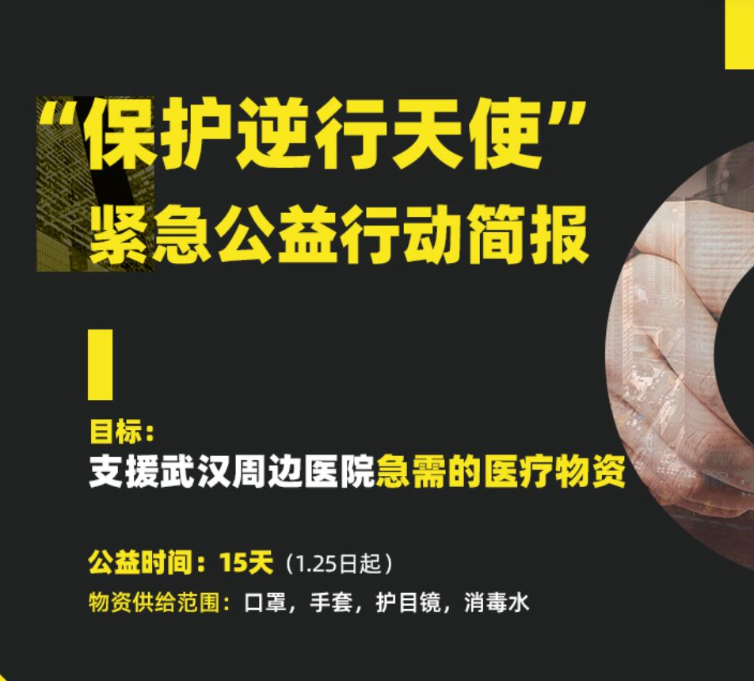
时间紧，任务重，他们迅速做出几个决策：
筛选出武汉周边9家医院，聚焦在口罩等4样物资，
用商业的方式沟通，15天结束战斗。
“随着工厂慢慢恢复，我们的力量已经不足够了，
这是一场补位战。”
截至1.29日，他们通过朋友圈传播，
共获得捐款298笔，累计37万元。
期间，最难的不是募资，
而是如何快速准确地找到合适的货，
迅速把钱花光，储备物资；
“我们账上的钱剩的越多，越心慌。”
最糟心的还有人言可畏，
“平时我们都是在企业当老板的，
前方全力投入，后方被人骂被质疑，
第四天所有人情绪都爆炸了。”
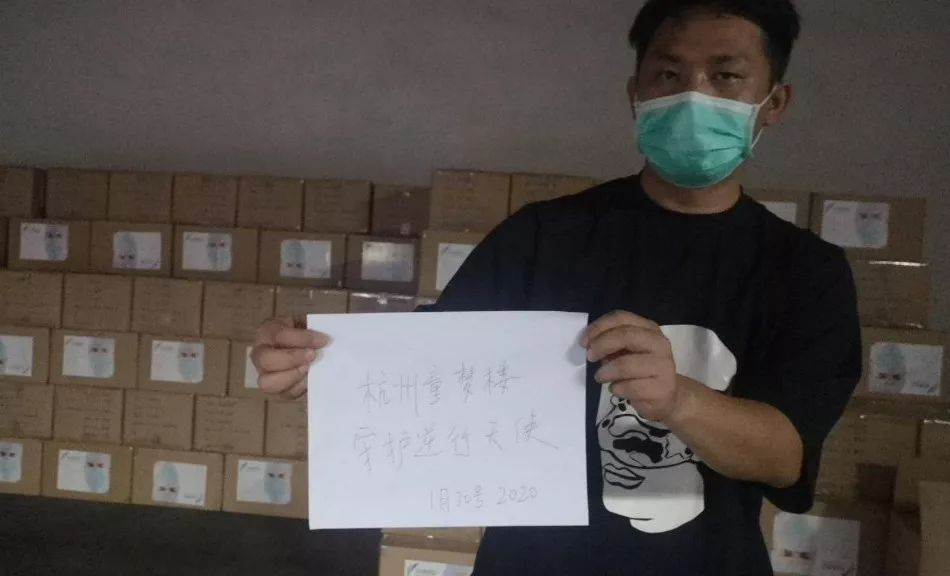
印尼的物资出发前完成核对
一条联系到发起人之一朱雀时，
他刚搞定一笔印尼的物资，身心俱疲，
他说：“这样的公益，我大概很难再做第二次了，
如果非要做第二次的话，我想跟这帮人一起干。”
公益项目刚刚告一段落，
摆在三位创业者发起人面前的是更大的难题，
“因为疫情推迟复工，
我们自己企业一个月血淋淋几十万到几百万的亏损，
作为创业者，这次危机逼着所有人思考，
要如何面对未来。”
***************************自述 ************************朱雀************************************ ******编辑 ******************************张锐嘉***************


田飒响应号召留在武汉 在家线上参与协作
缘起：一个武汉大男人对着电话哭了
我是85年的，自己本身在杭州创业，做一个小型公司。疫情开始的时候我就很关注湖北的情况，因为我有武汉的朋友，有一个朋友他也是我们现在的主要成员之一，叫田飒。年三十封城那天，我发微信问他“兄弟你那边现在情况怎么样？”他回了很多语音，他觉得武汉就是个孤岛，觉得自己被困在孤岛里了，突然有外边的人关心他，一下子就绷不住了，这个大男人一下子哭了。
这件事很触动我，我觉得自己是不是能做点什么？
当年Sars的时候还在读书，是被保护对象，什么也做不了，今天的武汉让人揪心，一整天心里都有个声音：我辈今天能做什么？
我其实做了很多年公益，但都只局限于捐钱，捐完钱就完事了。年三十晚上，王章伟给我打电话说想做点什么，他做了13年的公益，也有自己的公益机构，一直是亲力亲为，自己募捐、自己找项目、亲自对接；
王章伟拉上湖北创业者刘雨飞一起参与，当晚我们三个就组了个草台班子开始干了。

“一日2餐在电脑前解决，每天蓬头垢面在书房里呆18个小时。” –朱雀
三个中小型公司创业者发起的公益组织：
用商业的方式来沟通
我们的小团队有一个背景：我们都是中小型创业公司的创业者，大家都是做生意的。于是慢慢我们摸索出了这次公益和平时做公司之间的联系。
有了上游小组对接医院，那么第二天第三天，我们就有了第二个小组：对接供应商找货、选货。
早期对接物资的成员中亚卿，桃子和我，我跟各路供应商打交道比较多，亚卿是淘宝服装的大卖家，是很好的买手，桃子以前和医疗行业打过交道，并且运营了一个妈妈社群，里面有海内外的高知妈妈，这些都是我们的长处。于是我们三个组成了这个供应商对接小组。
因为大家全部在线协同，难免有遗漏。很快地我们建立了一个在线石墨文档，艾草负责把所有关键信息填到文章中去，比如供应商信息，比如发货之后的跟进，什么时候收货，数量都是多少，中间物流是否出问题等等。
我们一共有200多个群聊，很多群的内容也很杂，这个文档能保证信息不沉没在群里，所有人都掌握了所有的信息，不被沉淀。
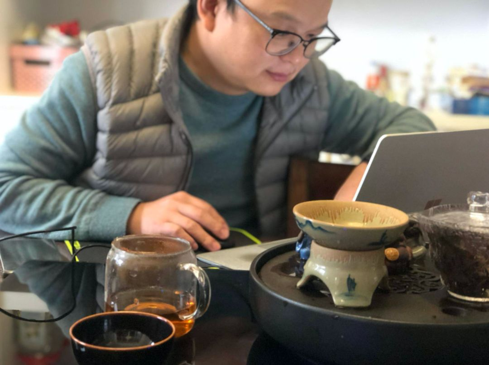
董启广在家参与线上协作
其实这个小型组织里，
· 对接医院的这组人，其实对接的是客户，他们要了解客户需求；
· 对接供应链的人，相当于bd，也就是买手；
· 那么选品结束后是需要有人跟进的，这组人是负责下游物资的落地跟进；
· 我们还认识一位智能锁公司老板董启广，他对物流很熟悉，负责协调我们解决不了的物流问题；
· 有一位志愿者，负责在这200多个群里，去对话我们的捐赠者，收集需要解决的信息，减少问题、减少误会；
· 群里有人来问各种跟货品有关的问题、很杂很乱，我亚卿和董启广拉上公司两个设计师，帮我们设计了物资需求表，我们大概要多少货、标准是什么，价格控制在多少。
· 另外，所有的素材基本由我在统筹。
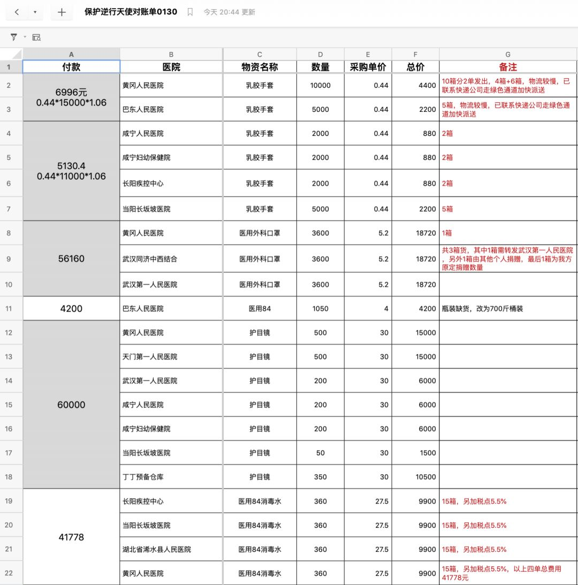
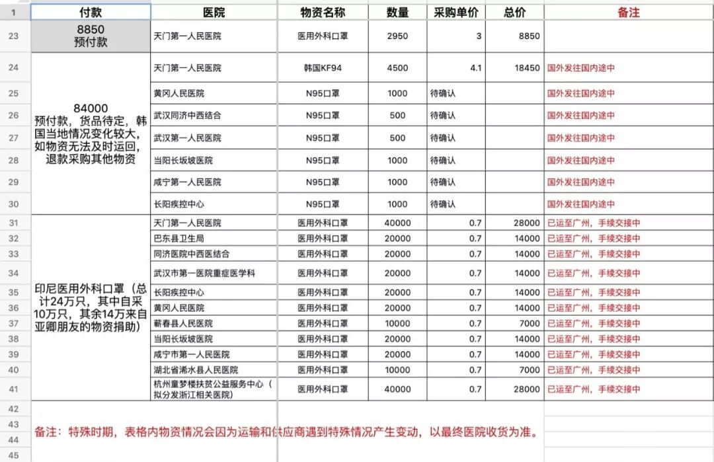“守护逆行天使”对账单
决策一：与医院点对点捐赠
我们是一直在混乱中摸索着往前走的，第一天是最混乱的。
第一天的工作分为两块：一方面找供应商找口罩，一方面募资。我们三个发起人在朋友圈转发募捐的信息，还带一张支付宝二维码。慢慢地有熟人参与进来。
我们有个朋友叫刘雨飞，他是我们中捐款数量最多的，一个人捐了七八万，他认为最快速的方案就是把钱捐给红十字会，在群里说了这个方案之后，很多人都不同意，这个心态你能理解吧？于是群里开始有了第一次分歧。最后他同意了我们的意见，点对点去医院捐助。
于是由武汉本地人田飒、创业者刘雨飞组成的第一个小组形成了，负责对接上游的医院。我们要保证所有捐助与医院直接对接。

第一天我们聚焦在武汉的医院，第二天我们临时决定转变方向：为周边城市的医院捐赠，因为武汉已经有政府和很多爱心组织介入，后来我们筛选出9家周边医院，了解他们的需求，每日救治人数，根据人数确定募捐数量和物资数量。
这9个医院大部分是他们本身有困难、主动找到我们，也有我们熟悉的朋友所在的医院。因为其实都是小城镇小乡镇的医院，民众也恐慌，有些病例进来，一是当时医院也不知道自己具体的需求，二是不知道明天会发生什么，这种情况会持续多久？一切都是混乱的。
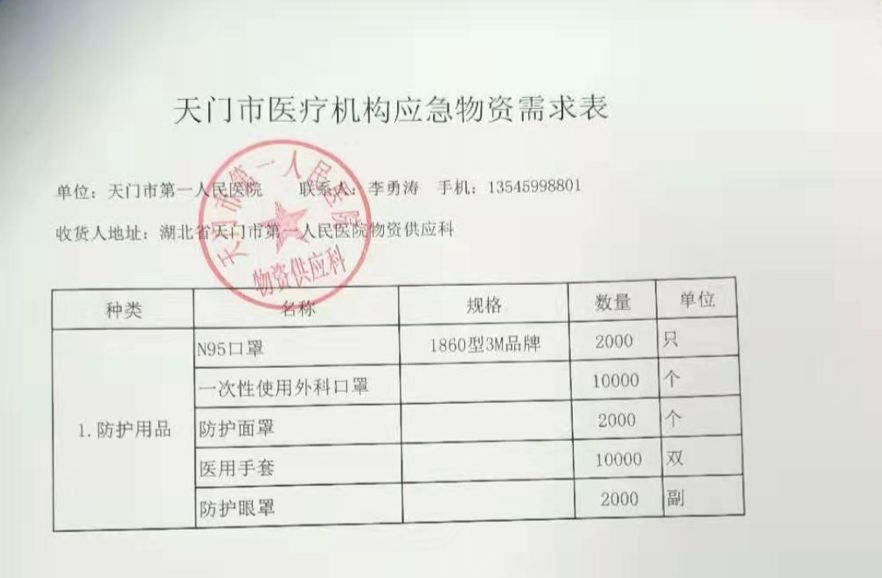

我们要先把医院负责人拉进群沟通，等物资送达医院的时候，我们都要求医院开具带公章的证明、拍照等。其实这个过程挺残忍的，因为医院已经忙得火急火燎了，但我们为了弄清楚所有细节和数据，必须要医院提供这些证明，他们也要填各种各样的资料。但跟他们的沟通中，其实也是一个了解用户需求的过程。
我们也有几个在武汉的医生朋友，他们已经被隔离在家了。我们就拉了一个物资审核小组，由医生组成，供应商的货过来，我们就发到群里问他们是否符合标准。行不行？能不能用？
决策二：我们是一个补位战
因为人少能量小，我们最早开始的定位就是在15天内的补位战，之所以现在一线物资这么紧缺，是因为过年，工人们都没上班，我们是在社会没完全反应过来的时候，尽我们所能对接物资，后续还是需要依靠政府。
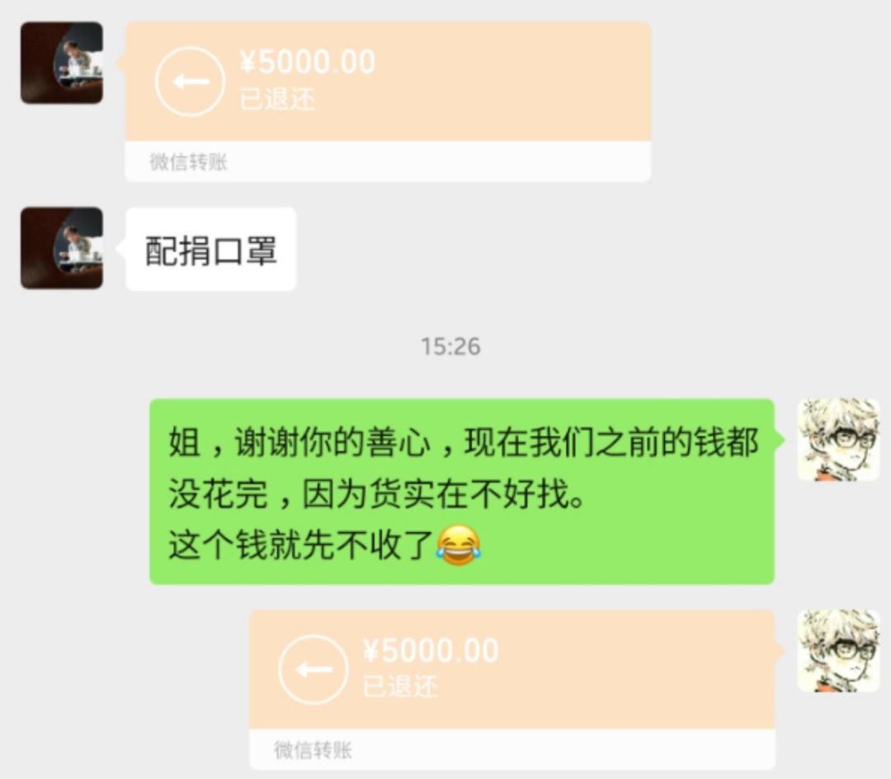
决策三：迅速把钱花光，储备物资；
我们账上的钱剩的越多，越心慌
第一天我们根本没意识到我们缺的是物资，甚至觉得有点缺钱，因为第一天上午只有5万块。
但随着很多人的加入，钱马上就不是问题了，第二个问题是需求：钱到手了，我们的钱该怎么花？
其实我们募捐到30万的时候，我们就不要钱了。当时还有很多人一声不吭地给我们支付宝转钱，也有二话不说微信转账的，后来我都退还了，因为那时候难处不是钱不够，是钱花不出去。物资难买。
中间整个过程，我们帐上的钱越多，我们越心慌，就希望赶紧把钱花光，不要有钱了。
决策四：只提供4个品类，保持聚焦
我们盘点了一下自己的能力，把提供的物资锁定在4个品类：口罩，手套，护目镜，消毒水，其它一概不做。因为再多我们根本忙不过来，这样相对聚焦一点。
期间很多人也提到我们要不要做防护服，甚至要不要跟浙江的医院对接，因为后来浙江医院也开始紧缺了，可不管别人怎么讲，我们不能动摇，保持聚焦，不然两边都做不好，跟做企业一样。
 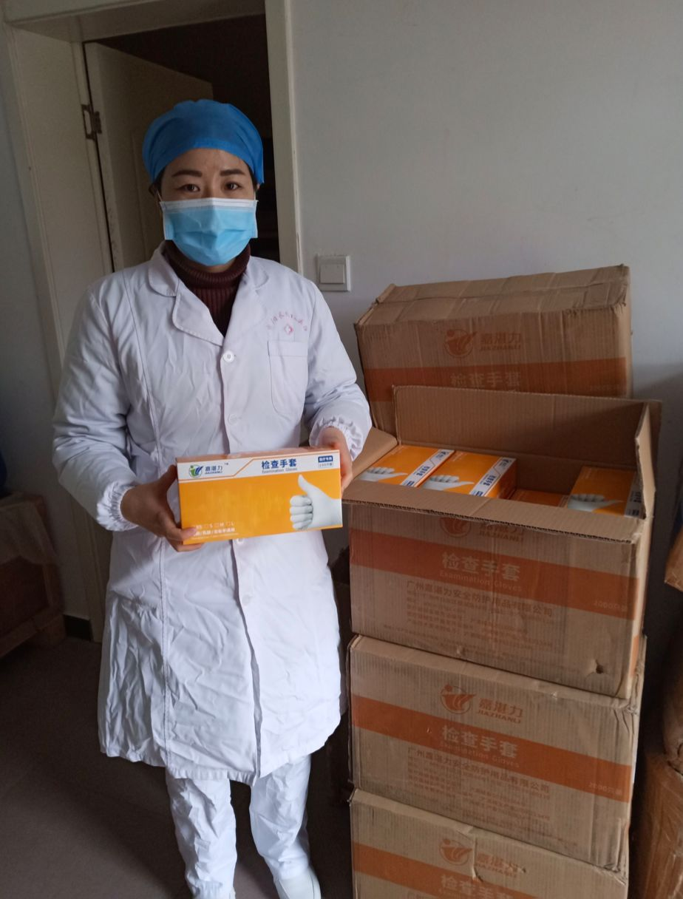
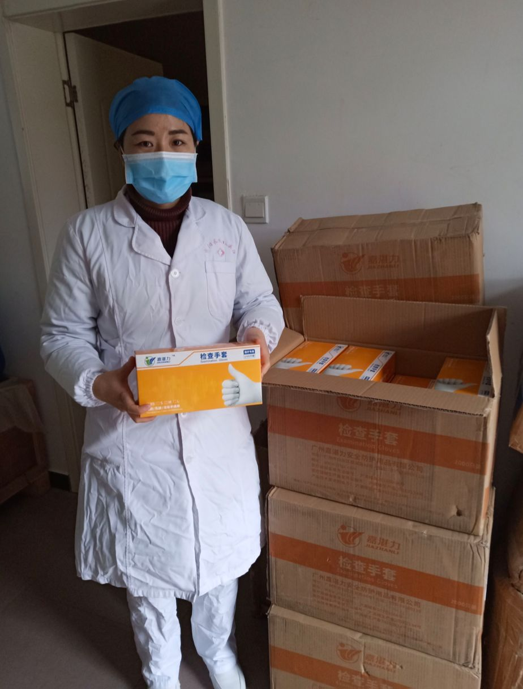
物资发出前、收货后留影
谈好的供应商涨价了，封城货出不来，
争分夺秒的物资谈判
我们每个阶段遇到的问题都不一样，今天也不例外。
直到一小时前（采访时间1月30号下午）我才觉得轻松了很多，搞完了一单印尼的物资，给很多问题收了尾。
我们最开始锁定了一些供应商，需要沟通的问题太多了，资质的问题，货量的问题，价格的问题，什么时候发货？物流怎么处理？大概六七个环节全部沟通到位才能付钱。今天有个供应商都已经到了付钱的一刻了，临时涨价一倍，这时候没人跟你签合同，你不要就给其他人了，争分夺秒的。
口罩的进货价格跟平时涨了2倍，3倍，5倍，10倍的都有。最夸张的就是防护服，第一天对接防护服供应商，正常市面价格一套40、50，结果一个供货商给我们开价470。最后人家说看你们做公益的，给你们400。
我们第一次订货的时候没有经验，找货的朋友找到了供应商，当我们犹豫价格是不是贵了的时候，转眼间货就没了，找货的朋友也很懊恼，好不容易找到的货又没了，后来我们经验多了，做决策也快准狠了很多。
后来遇到过一个江苏的供应商，钱已经付过去了，发货的时候告诉我们江苏封城了，货在江苏下面的一个镇，这货出不来，都急死了。我们是有公益的驾驶员帮我们拉货的，当地封城是下午2点，但工厂2点前完不了工，他们要做一个消毒的工序，所以货就没走成。有些政府允许捐助的物资通行，有些不行，有些流程巨复杂，要政府开证明。
还有我听说别的组织花钱订的货在路上被官方征用了，合理调配，最后也会送到各大医院，但还是会被打击到。
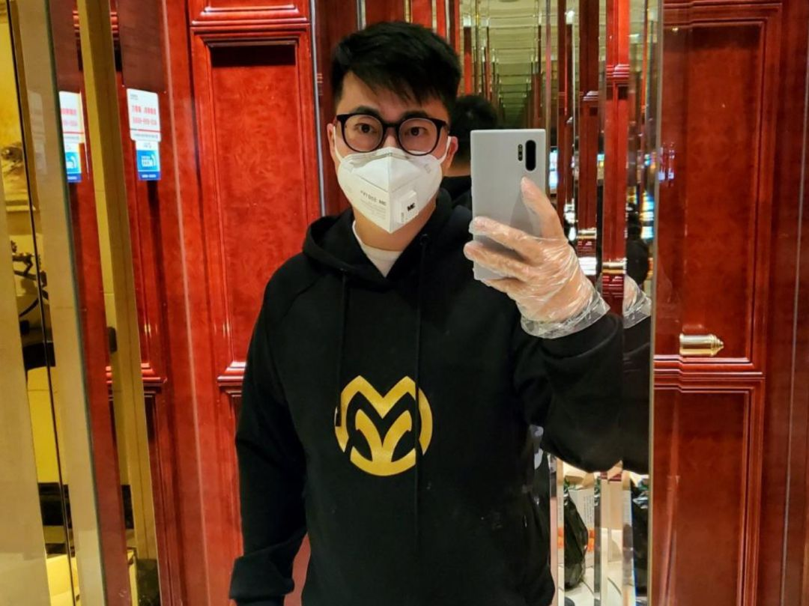
项目发起人之一、口述者朱雀
使命完成，我们已经做不了什么了
我们原定15天结束战斗，其实5天就基本结束了，现在就剩收尾了。
目前还有一波5万块钱的韩国供应商没落地。今天刚才印尼的刚刚收货。我们海外的货都是有朋友在当地有认识的华人，当地能找到清关公司、开具相关证明。
相比别的民间公益组织，我们是有优势的，我们本身依托的是其中一位发起人王章伟的公益机构，所以资质齐全，财务流程合规性很高，印尼那边拿着我们的函跟南航沟通，能开绿色通道，货也能比较快速顺利地通关落地。
货一刻不到永远，我们的心都是悬着的，生怕物流出现什么问题。
随着工厂的恢复，政府的介入，我们的力量已经不足够了，只能补位，后面的工作就剩收尾了，确保后面的货对接好，给群里所有捐钱的人一个交代。
医院整体的物资肯定不会因为我们一点点努力全部缓解，物资是一直缺的，会一直缺。最开始大家把目光都聚集在武汉，第二天有意识到旁边的黄冈、孝感，包括杭州温州，数据都在飙升，但我们已经做不了什么了。
其实我做公益很多年，但都只局限于捐钱，每次有重大事件或者身边朋友有需要，我都捐钱，捐完我的善心得到满足，我不会去追问钱花在什么地方。
这次亲力亲为参与进去，时间紧，任务重，又在这样的背景下做公益，完全脱了一层皮。情绪一直都有，所有的流程工序，任何细节都可能造成情绪。
人言可畏。这些天大群里，被质疑数据不透明，有胡搅蛮缠的，也有一根筋不理解的，还有指责我们管理方式的；在群里说完还要加你的私信说，前几天初二初三我们状态还稍好点，我们就说对不起，是我们没做到位，是可以做得更好。态度是“承认错误，我们努力。”
 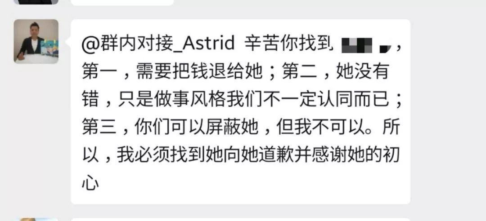
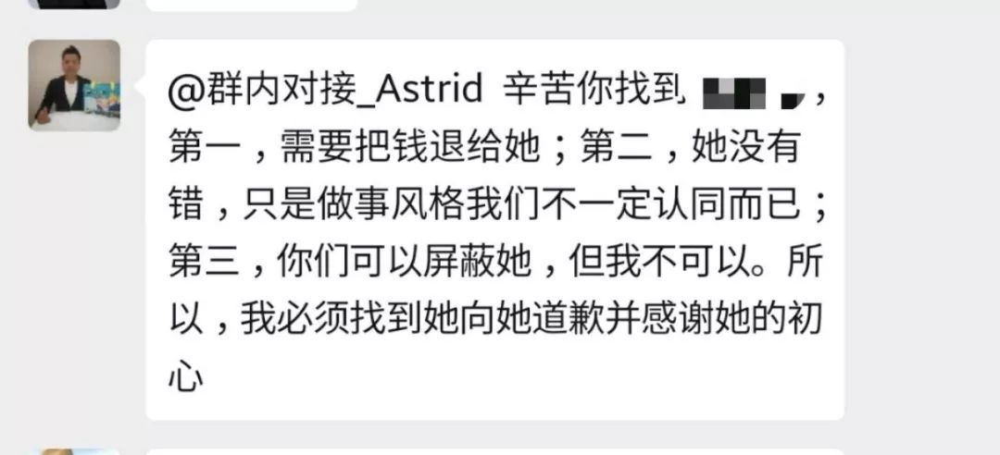
直到昨天，我们的情绪都爆发了，因为出最多的钱、干最多的活、受最多的累。管理员太生气把一个人踢了，把捐的钱还给她，但委屈到什么程度？退完钱还要把她加回来，解释清楚得到她的原谅，因为她捐钱也是好意，不希望组织的名誉受损。
我们这几个人，大家都是做企业的，谁没有几分脾气？本来在自己公司里都是做老板的，今天有人说你管理不好，流程不对，不透明，真是气不知道往哪撒，太憋屈了。
我们从第二天开始，不光每天晚上开线上复盘会议，我还让所有参与者在石墨文档中写日记。昨晚上我写了这样一段话：
这样的公益，我大概很难再做第二次了，如果非要做第二次的话，我想跟这帮人一起干。
这样的事情我也不希望再碰到第二次了。

王章伟在家参与线上协作
做了13年公益的王章伟昨晚跟我们说了一段话，他说“我虽然早就经历过被误解、被指责、被谩骂的内心的疼痛，我以为自己会免疫，但再碰到一次还是会难受。”
我们之前做的5天4夜，没有一个人睡得好。我们叫亚卿的一个女孩子是负责找供应商的，晚上做梦都是口罩。觉得第二天如果找不到口罩的供应商，一天就白干了。
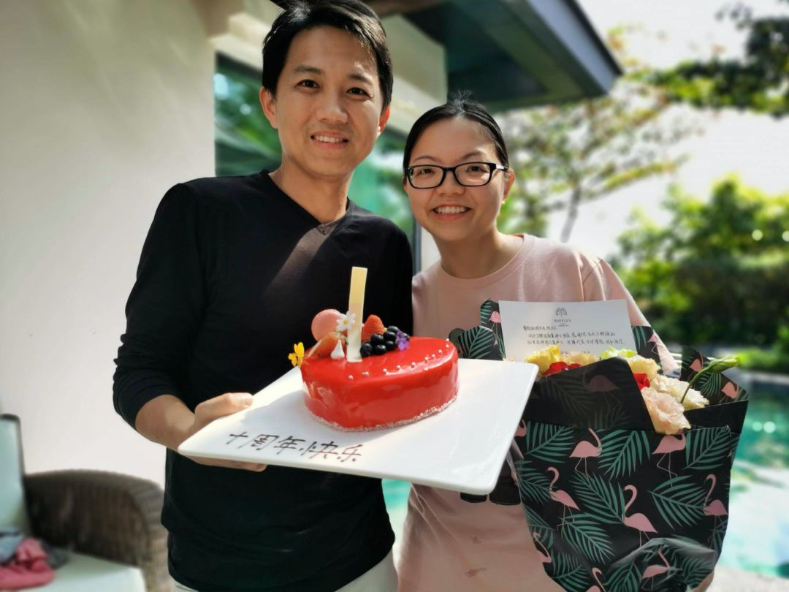
期间，桃子和老公度过十周年纪念日
“草率到没有洗头没有换漂亮衣服就拍照的十周年纪念”
我们参与者里面，有老公刚做完手术的，有小朋友生病的，还有身上有癌症还未痊愈的。女性的力量太大了，里面有几个妈妈需要照顾小孩，线上忙着忙着说“稍等下，我给孩子做个菜”；昨天还是桃子结婚十周年，有时候家人也没办法理解，说为什么眼前的人你都不照顾，你去操心那么远的人？这种是最难受的。
总而言之，我想表达的是，我知道像我们这样的组织有6、7个，这群做公益的需要被看到，因为现在奋战的不光是一线的医生护士，在白衣天使身边还有这么多愿意挽起袖子干活的人。
这群人被理解、被看到就足够了，不要让人寒了心。

救助完别人，轮到为自己的企业操心了
最后一个细节，刚刚弄完捐助，我们要开始为各自的公司操心了，大家准备迎接2020第一个季度的亏损，一个月血淋淋几十万到几百万的亏损，这是我们这个小组要面临的新的挑战。
来自销售方式的困难：以线下实体店销售为主的业务，全部关闭和停滞，第一季度现金收入预计不足2019的10%；
来自经营品类的困难：人都被隔离在家里，除了生活必需品和健康产品，波及的行业非常多，同时上半年线销售场所缺乏客流将板上钉钉；
来自上游客户传导的困难：以电商为主要业务的仓储分拨供应链公司的上游客户不能开工，而空置的大量库房成本无法消化，目前的情况对自己公司也是很大的打击，不能复工不能运营，运输板块成本，仓储板块成本，粗略估计每个月损失在百万以上，不太敢往下想……

gif来源：林晨同学Hearing
总结我们这个临时的公益项目，我觉得企业和个体的协作方式会进入下一个时代，比如在线协同工具的应用，社群的小群体更紧密连接，人和人相互信任背书，也会给销售方式带来新的变化，比如这次捐助和找供应商，无一例外来自熟人和熟人之间的推荐；
线下渠道会更积极用各种方式走上线上，比如直播；
全民对健康的关注达到了前所未有的热度，各自公司在服务和产品上将会不同程度为此做出改变。
这次疫情逼着所有人思考，要如何面对未来。
困难可怕，更可怕的失去面对困难的勇气。
*我们正处在一个重大公共卫生事件之中，到今天为止，新冠肺炎的感染人数已经远超越非典，再次提醒大家不要出门，保护好自己和家人！*

疫情依然严峻，针对以下人群，
我们正在寻找采访对象！
#我在疫情一线#
不论是您是在湖北还是全国其他地区，只要您是奋战在一线的医护人员、后勤补给人员、记者、患者或患者家属，我们希望听到您的见闻和最迫切的需求。
#我的武汉现场#
如果您正身在武汉，如果您愿意讲述在“封城”后的实地体验见闻，我们希望把它传递给更多人。
请通过以下方式联系一条编辑，我们期盼您的消息！
一条编辑部邮箱editor@yit.com
或直接在文章下留言。
请您留下所在地、职业，大致讲述您的见闻与故事，如合适我们将尽快与您取得联系，进行采访！
如有图片也欢迎一并发来。
▼

原文链接 备份链接 自新型肺炎疫情爆发以来，湖北乃至全国多个省份的医院因防疫物资短缺，向社会发出求助。而另一种声音却在说防疫物资是充足的，没有短缺。一时之间，防疫物资成为了薛定谔的猫。 今日来信的这位作者，便是自发为一线医院筹集防疫物资的 …
原文链接 备份链接 记者/杨宝璐 编辑/宋建华 武汉市红十字会的志愿者们 在疫情中心武汉，街头空空荡荡，但仍不断有志愿者穿梭在物资仓库、医院、高速路口运送防护物资。物资源源不断地运送进来，但1月31日，越来越多呈现在人们眼前的，却是武汉若 …
原文链接 备份链接 《战疫口述记》，是燃财经在新型冠状病毒肺炎期间推出的特别栏目，记录疫情亲历者的观察和感受。本文为第6篇，查看前5篇请点击《我和公司都快熬不住了》《节后返京，太太太南了》《我的“流浪”春节》《农村这样防肺炎》《我在武汉 …
原文链接 备份链接 目前，几个粉丝站的物资除了少量还在路上，大部分已经送到需要的人手里，然而尽管如此，全国各地的物资缺口仍然很大。 文 | 王超 高逸佳 薛雨霏 编辑 | 沈小山 “这些天大家也真的很拼了，晚上核对整理信息有时三四点才睡， …
原文链接 备份链接 Haylin是一名生活在武汉积玉桥的自由职业戏剧人。疫情爆发的这段日子，她说自己作为一个武汉人，“已经习惯了每天早上起来查有多少新增病例等等，晚上睡觉前看又有哪个医院在发求助消息的习惯”。为了出力，她参与了一个志愿者 …